Connectors
Microsoft Fabric® Connector
Overview
The ASAPIO Microsoft Fabric connector enables direct, event-driven loading of SAP data into Microsoft Fabric Lakehouses and Mirrors via the OneLake storage API. Authentication uses OAuth via Microsoft Entra ID only.
Prerequisites
- Microsoft Azure account with Microsoft Fabric enabled
- Entra ID application registration with permissions to access OneLake
- A Fabric workspace with a Lakehouse or Mirror configured
RFC Destinations
Create two HTTP RFC destinations (SM59, type G):
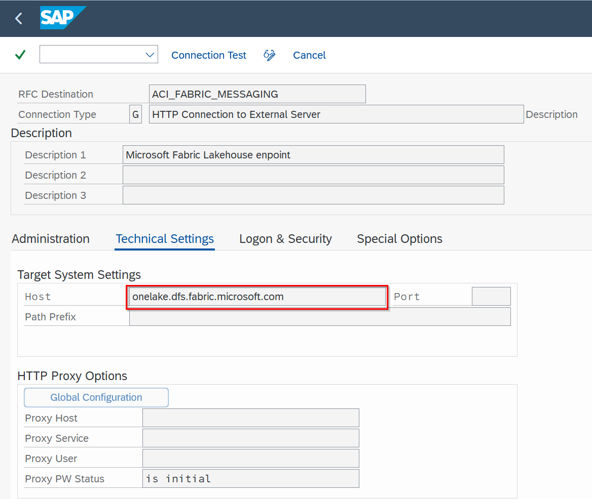
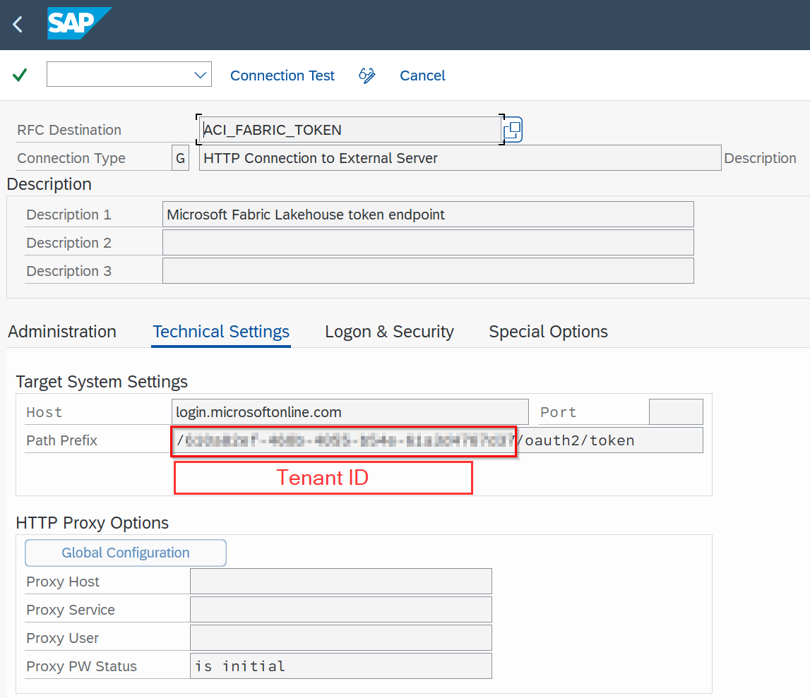
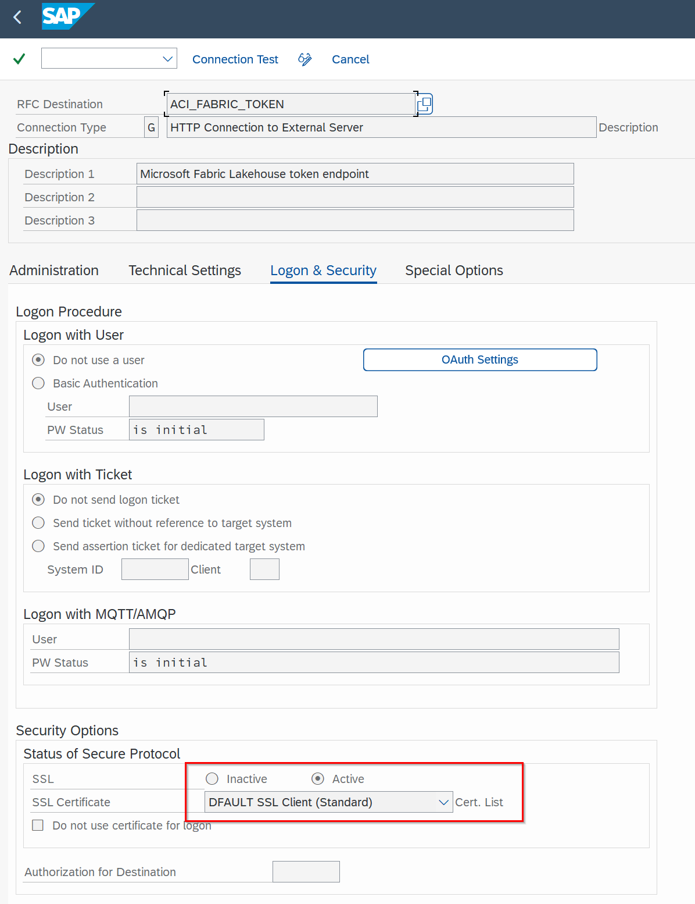
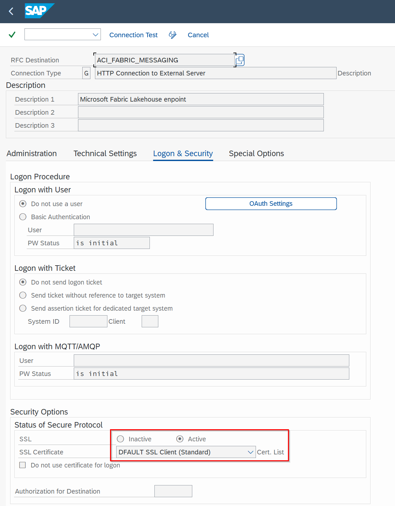
- OneLake endpoint:
onelake.dfs.fabric.microsoft.com - OAuth endpoint:
login.microsoftonline.com
BC-Set
Activate the same Azure framework BC-Set via SCPR20: /ASADEV/ACI_BCSET_FRAMEWORK_AZ
Cloud Instance
Create the connection instance in /ASADEV/ACI_SETTINGS with Cloud Type FABRIC. Set OAuth default values:
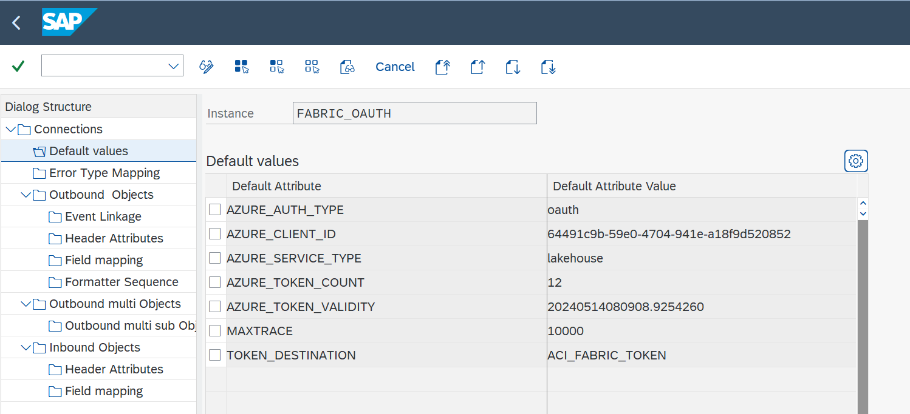
| Key | Value |
|---|---|
AZURE_CLIENT_ID | Entra ID application (client) ID |
TOKEN_DESTINATION | OAuth RFC destination name |
AZURE_AUTH_TYPE | oauth |
Open Mirroring (Parquet Format)
Introduced in release 9.32504, the Fabric Open Mirroring feature allows SAP data to be continuously replicated into a Fabric Mirror in Parquet format – enabling native Fabric analytics without ETL pipelines. Prerequisites: create a Mirrored Database in Microsoft Fabric first.
Configure the outbound object with the Parquet formatter and set the following header attributes:
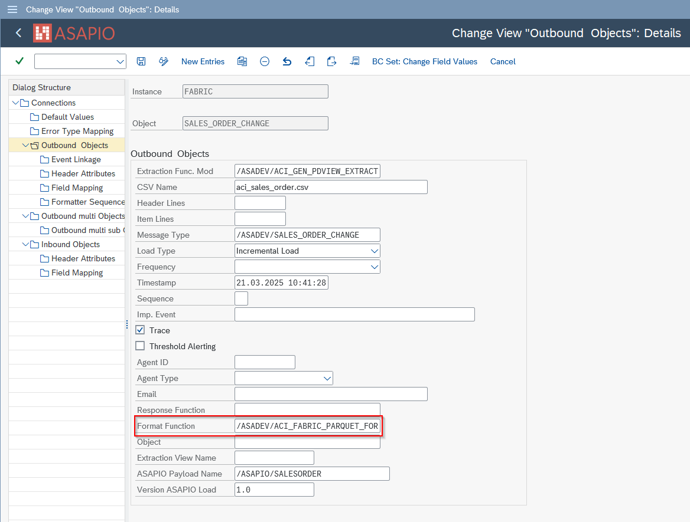
- Formatter:
/ASADEV/ACI_FABRIC_PARQUET_FORM
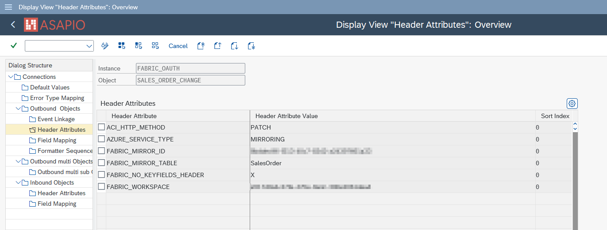
| Header Attribute | Value |
|---|---|
ACI_HTTP_METHOD | PATCH |
AZURE_SERVICE_TYPE | MIRRORING |
FABRIC_MIRROR_ID | Fabric Mirror GUID from Fabric portal |
FABRIC_MIRROR_TABLE | Target table name within the Mirror |
FABRIC_WORKSPACE | Fabric Workspace GUID |
Lakehouse (File Upload)
For Lakehouse scenarios (uploading files to OneLake), configure:
| Header Attribute | Value |
|---|---|
ACI_HTTP_METHOD | PATCH |
FABRIC_FILE_PATH | Target file path within the Lakehouse |
FABRIC_LAKEHOUSE | Lakehouse GUID from Fabric portal |
FABRIC_WORKSPACE | Fabric Workspace GUID |
Predefined Content Data Catalog
ASAPIO ships with a Predefined Content Data Catalog for Microsoft Fabric containing ready-to-use payload designs for the 30+ most common SAP data objects, including both S/4HANA CDS view versions and ECC table-based versions:
- GL Accounting Documents
- Sales Orders (header and items)
- Purchase Orders (header and items)
- Delivery Documents
- Material Movements / Goods Receipts
- Change Pointers (for delta loading)
- …and 25+ more objects
Each catalog item includes a payload design and a ready-to-deploy Event Studio interface definition.
Custom Data Products
For objects not in the catalog, create custom payload designs in Payload Designer (/n/ASADEV/DESIGN) and configure the outbound object with the extractor function module /ASADEV/ACI_GEN_PDVIEW_EXTRACT
Initial / Packed Load
For bulk loading of historical data into Fabric, use the Packed Load feature with the extractor and Parquet formatter:
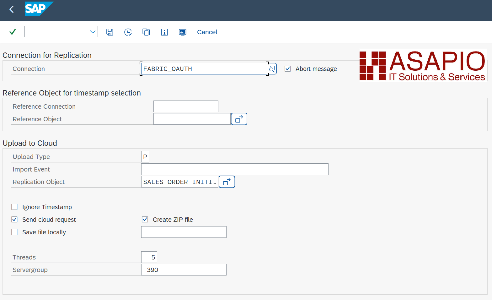
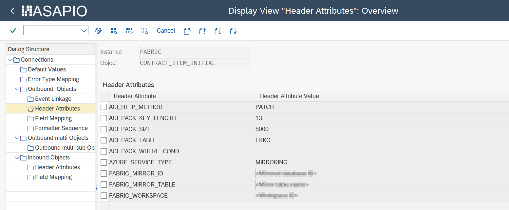
- Extractor:
/ASADEV/ACI_GEN_PDVIEW_EXTRACTwith Load Type: Packed Load - Formatter:
/ASADEV/ACI_PARQUET_FORMATTER
This sends data in Parquet-formatted batches instead of individual JSON events, significantly reducing processing overhead for large initial loads.
Lakehouse Notebook
ASAPIO provides a downloadable PySpark Notebook for Microsoft Fabric that automates the import of CSV files into a Lakehouse database (Delta tables). Import the notebook into your Fabric workspace and configure the file path, Delta table path, and file name pattern. The notebook can be scheduled as a pipeline job.
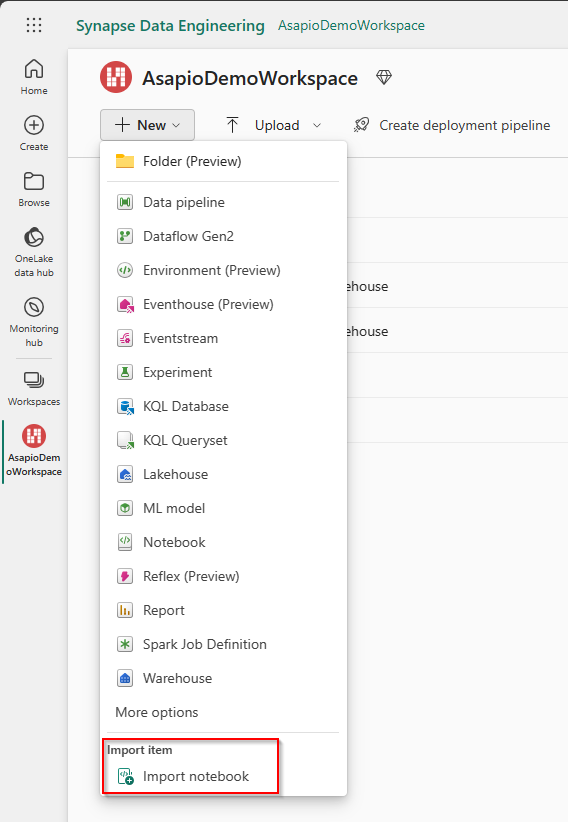
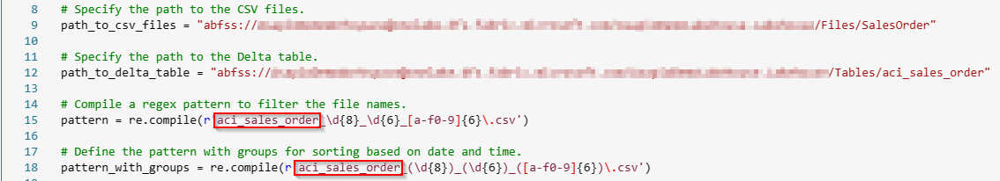
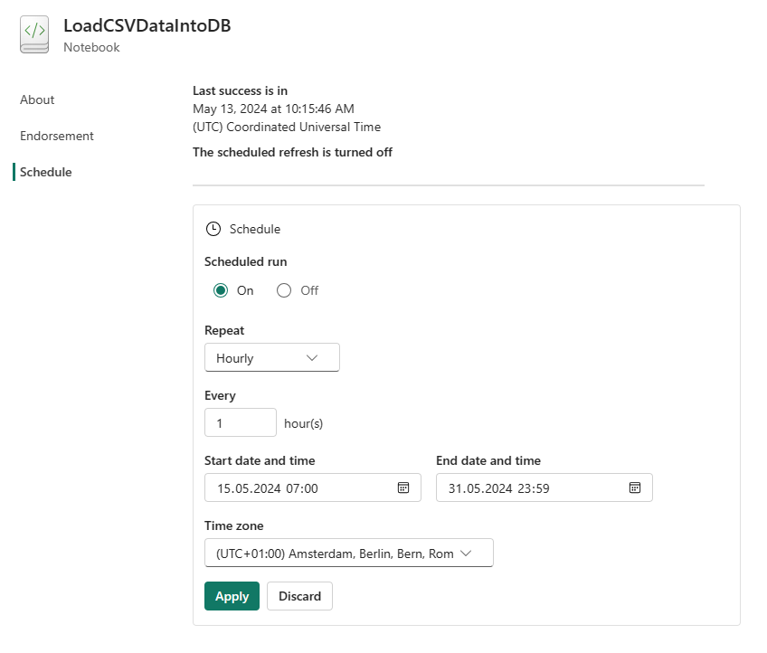